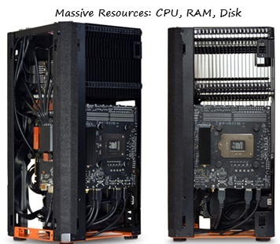
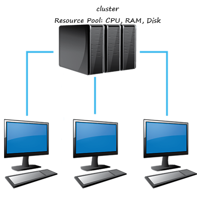

What is Big Data and How it Started
What is Data?
Data is the facts, figures, and details we collect, store, and use to understand something, make decisions, or solve problems.
Data categories
Mainly data is categorized in 3 types. It can be:
Structured Data: Data is Organized, in standardized format, and easily searchable. Mostly available in row-column format (tabular).
Semi-Structured Data: It is Partially organized, with some formatting. It does not obey tabular format. However, it has another well-defined key/value pair structures such as JSON and XML.
Unstructured Data: Unorganized, raw, and requires processing. It comes in text files, pdf, and other documents, images, and video files.
What is Big Data?
Big Data refers to:
Volume - Massive amount for data.
Variety - Data can be structured, semi-structured, and unstructured.
Velocity - rapid data generation and processing (Social media, sensors, transactions, etc.).
History and Evolution of Big Data
Big Data has a fascinating history and evolution. Let's dive in:
Early Beginning (1960s-1980s)
Data processing Applications:
Mainframe computers proccessed large datasets for scientific and governmental applications.
COBOL was the first programming language specifically designed for data processing and was designed in 1959.
COBOL allowed us to store data in files, create index files, and process data efficiently.
COBOL store and accessed the data in plain text files such as CSV files.
However, we saw data processing shift from COBOL to relational databases such as Oracle and Microsoft SQL Server.
Database management:
Relational datasets emerged, enabling structured data storage and querying.
Some Popular RDBMS are Oracle, SQL Server, PostgreSQL, MySQL, Teradata, and Exadata.
COBOL stored data in CSV, whereas Oracle or any other RDBMS store data in advanced file format - DBF files (usually stored in row-column format).
RDBMS could not store and process data in JSON and XML data files (known as Semi-Structured Data).
Some RDBMS can handle semi-structure data to some extend like PostgreSQL, MySQL 5.7, Amazon Aurora, etc.
With the growth of Internet, we developed unstructured data which is failed to handle by RDBMS.
The Dawn of Big Data(1990s-2000s)
Internet explosion:
Web 2.0 and social media generated vast amounts of unstructured data such as pdf, doc, jpg, png, mp3, etc.
RDBMS was not designed to handle such an expansion of file format.
Business are now collecting more semi-structure and unstructure data.
One of the most complex Big Data issue is the constantly increasing Volume that requires adequate management, processing power, and storage capacity.
Point is straight, Modern data processing application must be able to handle the following problem:
Variety: Modern applications must be able to handle all variety of data. It means we need to handle structured, Semi-structured, and Unstructured data.
Volume: The volume of data is high these days. Companies generating large amount of data in a short period so we need capabilities to handle large volumes of data.
Velocity: Modern data is generated at very high speed. It takes very less time to collect perabytes of volume. We want to process these large data in faster time. So the velocity of collecting data is very high, and the requirement of processing velocity is also high.
Above 3 problems combined are also known as the Big Data problem.
RDBMS was not designed to handle Big Data problem. So industries need Big Data management platform to do the following:
Store high volumes of data arriving at higher speed.
Accomodate structured, semi-structured, and unstructured data variety.
Process gigh volumes of a variety of data at a very higher velocity.
Early Big Data tools and Solution:
As RDBMS is failed to handle Big Data problem, Industries needed Big Data Management platform to hand Big Data problem (3V's - Variety, Volume, and Velocity).
Two approaches of Big Data Solution:
Monolithic approach
Distributed approach
Monolithic approach: Monolithic systems uses one massive system with a vast capacity of CPU, RAM, and Disk storage.
Distributed approach: It uses a cluster of computers connected to work as a single system. The combined capacity of the cluster may be equal to or even higher than single Monolithic system.
These 2 approaches can be compared on the following criteria:
Monolithic Approach Distributed Approach   Scalability
Scalability is the ability of the system to increase or decrease performance in response to the demand. The system is scalable if you are able to increase its capacity (RAM, Processor, or storing etc.).
Scalabilty is more complex. In this approach, we increase the Tower's height. This approach is known as Verical scalability. We may need to call the vendor and request them to increase or decrease the capacity.
Easy scalable. Scaling is as simple as adding a few more computers to the network. This approach is known as horizontal scalablity.
Vertically Scalable.
Horizontally Scalable.
Fault tolerance and high availability
Fault tolerance is the ability of a system to maintain proper operation in the event of failures or faults in one or more of its components like if a cpu burns out, a network card fails, or the sysem's motherboard fails.
Monolithic system may not tolerate a hardware failure. If a hardware component of a monolithic system fails, it may stop working and your application will not remain available for the users.
If a system fails in cluster, than other systems remain working. So a distributed system can tolerate many failures. A system failure in a cluster will only reduce its capacity, but the overall system remains working.
cannot tolerate hardware failures.
can tolerate hardware failures.
Cost-Effictiveness
Monolithic system are expensive. Scaling them takes a lot of time. So you may have to start with a large machine even if you need a smaller one.
The distributed architecture uses a cluster of computers. You can start with a small cluster and keep your initial investment as low as needed. You can add some more machine at a later stage as your requirement grows.
Apache Hadoop (2005) and Google's MapReduce (2004) emerged.
Big Data Era (2010s)
Rise of Hadoop as a distributed Big Data Platfrom:
From both the approaches, Distributed system was a preferred approach.
Hadoop came as a distributed Big Data procesing platform to solve Big Data problems.
Hadoop platform was designed and developed in layers. The core platform layer offered three capabilities:
YARN: Hadoop was developed as an operating system of a distributed cluster. For a cluster of computers, we need a cluster operating system. Cluster operating system allows us to use the cluster resources such as CPU, Memory, and disk. CPU, Memory, and Disk on a cluster setup are spread across the computers. We are not using a single computer where everything is available on a single machine. A cluster is a group of computers. Cluster Operating System makes it work like a single large computer. It allowed us to use a cluster of computers as a single large computer. So, Yarn is Distributed cluster formation or Cluster Operating System.
HDFS: Hadoop also allowed us to store data and retrieve it back. The data is internally distributed on the hard disks on the cluster. However, Hadoop offered us a distrbuted storage system and allowed us to save and read the data file as we do it on a single machine.
Map/Reduce: Hadoop also allowed us to write a data processing application in Java and run it on the cluster. So Hadoop offered us a new distributed data processing framework known a s Map-Reduce framework for processing large volumes of data.
Hadoop platform was designed to use the cluster of computers as a single large machine. We can read/write and program data processing applications and run them on the Hadoop cluster without realizing that we are working on a cluster.
Hadoop simplified distributed computing for developers, programs run on a distributed computing platform and uses parallel processing.
Hadoop community developed many other tools over and above the hadoop Core platform (YARN, HDFS, Map-reduce). Some of the tools are Hive database, HBase database, Pig Scripting Language, Sqoopt data ingestion tools and Oozee workflow tool.
NoSQL Databases:
NoSQL databases: MongoDB, Cassandra, and others addressed unstructured data needs to some extent.
Spark's emergence (2010):
spark's rise to popularity (2012-2015). It is In-memory processing, Faster than Hadoop 's MapReduce, Easy integration with Hadoop, NoSQL databases, and data sources.
Cloud Computing:
Amazon Web Services (AWS, Microsoft Azure, and Google Cloud Platform (GCP) offered scalable infrastructure.
Modern Big Data (2020s)
AI and ML Integration
Real-time processing: Apache Spark, Apache Kafka, Apache Flink, and other enabled streaming data processing
Data Engineering and Science: Data pipelines, ETL, data warehousing
Hadoop Architecture, History, and Evolution
What is Hadoop?
Hadoop is a distributed data processing
What is Data Lake and How it works
Introducing Apache Spark and Databricks Cloud
Next »